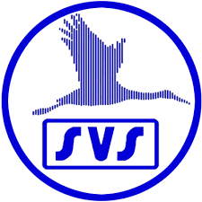
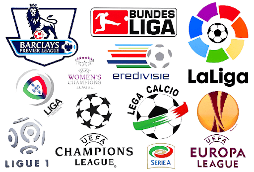

 Voetbal is de mooiste en beste sport ter wereld. Als ik het kijk word ik er altijd blij van. Ikzelf voetbal al sinds mijn 6e. Ik ben nooit de beste in mijn team geweest, maar ik blijf het toch zo leuk vinden. De club waar ik het zelf speel is SVS, ik zit in de JO17-3. We hebben een team waarin we allemaal met elkaar bevriend zijn en we kunnen goed met elkaar omgaan. Op dit moment staan we 4e in onze poule, we spelen 4e klasse.
 In het overige deel van de website ga ik het hebben over 4 grote competities: 1. Premier League 2. La Liga 3. Wereld Kampioenschap 4. Champions League. Dit zijn op dit moment de 4 grootste competites in voetbal. De Premier League is de competitie in Engeland, de 20 beste teams uit Engeland spelen hierin bijna elke week van het jaar (vakantie tel ik niet mee) tegen elkaar. La Liga is de competitie in Spanje, hierin spelen de 20 beste teams uit Spanje tegen elkaar (ze spelen niet zo veel achter elkaar als in de Premier League). Het Wereld Kampioenschap is een kampioenschap dat om de 4 jaar wordt gehouden tussen de 32 beste voetballanden ter wereld. De Champions League is de grootste competitie in Europa, hierin spelen de beste teams per land tegen elkaar. Sommige landen hebben 4 deelnemers terwijl anderen maar 1 hebben, dit ligt aan hoe goed de teams in het land zijn.